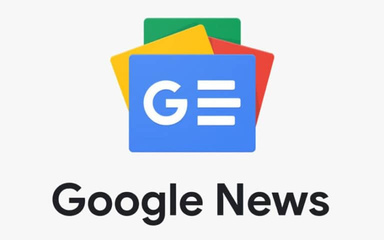
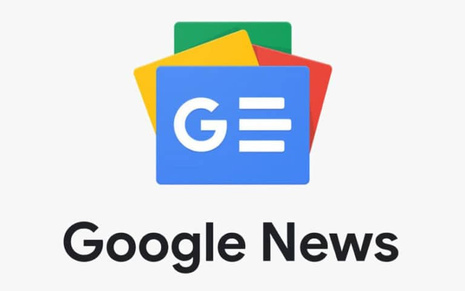

A suivre
.
L'Ethereum est une crypto-monnaie créée le 30 Juillet 2015 par Vitalik Buterin. Sa création a pour but de créer un protocole
d'échanges décentralisés permettant la création par les utilisateurs de contrats intelligents.
Ces contrats intelligents sont basés sur
un protocole informatique permettant de vérifier ou de mettre en application un contrat mutuel. Ils sont déployés et
consultables publiquement dans une blockchain.
Lexique :
Crypto-monnaie: Une monnaie numérique utilisable au moyen d'un réseau informatique
Contrat intelligent: Contrats numériques stockés dans une blockchain qui sont automatiquement exécutés lorsque des conditions générales prédéterminées sont remplies
Blockchain: Technologie de stockage et de transmission d’informations avec un haut niveau de transparence et de sécurité car elle fonctionne sans organe central de contrôle.

 

La mise à jour Shanghai sera déployée sur le mainnet Ethereum le 12 avril.
Elle permettra aux détenteurs d'ETH bloqués sur la Beacon Chain de les retirer grâce à la fonctionnalité de retrait EIP-4985.
Il s'agit de la mise à jour la plus importante depuis le Merge du mois de septembre dernier, puisque plus de 17,7 millions d'ETH vont
ainsi être remis en circulation. Shanghai signera ainsi la transition totale d'Ethereum vers la méthode de preuve d'enjeu (PoS).
L’utilisation d’Ethereum entraîne une marque indélébile de vos actions sur la blockchain. Marques qui sont jusqu’à présent
publiques. Ainsi, comme expliqué par Buterin, la confidentialité est d’ores et déjà au cœur des débats de développeurs.
Cependant, ces débats se sont majoritairement concentrés sur un aspect de la confidentialité, celle lors des transferts
en ETH ou ERC-20.
Néanmoins, dans sa publication, Vitalik Buterin souhaite mettre en lumière un autre type d’outil qui permet d’assurer
la confidentialité : les stealth addresses.
cette année 2022 a été riche en événements. Retenons notamment The Merge au mois de septembre qui a, par la suite,
déclenché une vive polémique sur la censure potentielle du nouveau réseau en Preuve d’Enjeu. Aujourd’hui, on
s’intéresse au lancement d’un nouveau langage à destination des validateurs du réseau proposé par Paradigm, et
qui se nomme Reth.
Celui-ci permettra aux validateurs sur Ethereum de lancer des nœuds en utilisant le langage Rust.
D’ailleurs, Reth est le diminutif de « Rust-Ethereum ». Paradigm participe ainsi à la pluralité des solutions
et souhaite que son nouvel outil soit utilisé par des profils différents
Après le changement du processus de validation de l'Etherum. Ce dernier souhaite maintenant réduire son empreinte carbone
et compenser les émissions lié au travail du réseau.
Réduction drastique de consommation énergétique après le Merge, estimée actuellement à 0.01 TWh/an
À titre d’exemple, la plateforme de streaming Youtube consomme à elle seule environ 250 TWh/an, le géant Netflix environ 100 TWh/an.
cette année 2022 a été riche en événements. Retenons notamment The Merge au mois de septembre qui a, par la suite,
déclenché une vive polémique sur la censure potentielle du nouveau réseau en Preuve d’Enjeu. Aujourd’hui, on
s’intéresse au lancement d’un nouveau langage à destination des validateurs du réseau proposé par Paradigm, et
qui se nomme Reth.
Celui-ci permettra aux validateurs sur Ethereum de lancer des nœuds en utilisant le langage Rust.
D’ailleurs, Reth est le diminutif de « Rust-Ethereum ». Paradigm participe ainsi à la pluralité des solutions
et souhaite que son nouvel outil soit utilisé par des profils différents
« La Fusion », une mise à jour sur la blockchain attendue depuis des mois, est effective à partir du jeudi 15 septembre.
Elle est censée permettre à ce réseau de crypto-monnaie, le deuxième au monde après celui du bitcoin, d’être moins gourmand en énergie.
L’enjeu est important pour le secteur. Certes, l’ether, la cryptomonnaie adossée à Ethereum, ne représente qu’environ 20 % de la valeur totale
des monnaies virtuelles existantes, soit deux fois moins que le bitcoin (40 %), la cryptomonnaie la plus utilisée dans le monde. Mais Ethereum possède
un champ d’applications beaucoup plus vaste que son concurrent, car elle sert de support à de multiples usages, comme la production de NFT, de jeux et d’applications.
la production de blocs intégrant les transactions est réalisée par des « mineurs » – des ordinateurs dont les ressources sont
dévolues à la sécurisation du réseau. Pour produire un bloc et poursuivre la continuité de la chaîne, il est nécessaire de
procéder à des calculs. Le premier mineur à réussir l’opération est récompensé par des etheurm. Plus il y a de participants
au réseau et plus les calculs sont complexes.
À la différence de la preuve de travail, cette méthode de consensus apparue en 2012 ne nécessite pas
l’exécution d’une tâche pour participer au réseau mais de prouver la possession de la cryptomonnaie en question. Pour cela, il est
nécessaire de mettre à disposition son capitale afin de participer à la validation des transactions et
la création de blocs. Avec ce consensus, les éventuels acteurs malicieux sont cette fois sanctionnés par la perte de leur capital.
La mise sous séquestre veille donc théoriquement à garantir les bons comportements.
Ce changement permet de réduire la consommation d'éléctricité de 99%